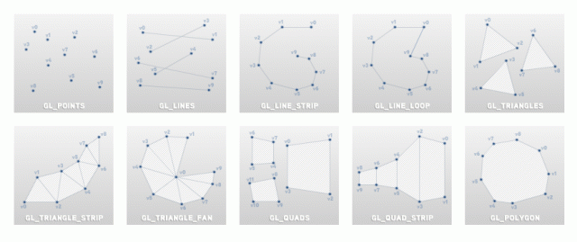
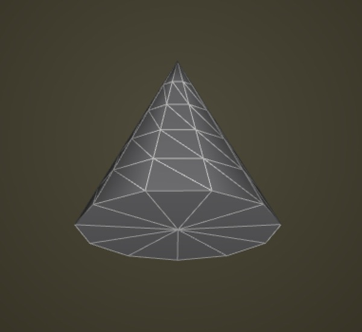

ofMesh

An ofMesh represents a set of vertices in 3D spaces, and normals at those points, colors at those points, and texture coordinates at those points. Each of these different properties is stored in a vector. Vertices are passed to your graphics card and your graphics card fill in the spaces in between them in a processing usually called the rendering pipeline. The rendering pipeline goes more or less like this:
-
Say how you're going to connect all the points.
-
Make some points.
-
Say that you're done making points.
You may be thinking: I'll just make eight vertices and voila: a cube. Not so quick. There's a hitch and that hitch is that the OpenGL renderer has different ways of connecting the vertices that you pass to it and none are as efficient as to only need eight vertices to create a cube.
You've probably seen a version of the following image somewhere before.  Generally you have to create your points to fit the drawing mode that you've selected because of whats called winding. A vertex gets connected to another vertex in the order that the mode does its winding and this means that you might need multiple vertices in a given location to create the shape you want. The cube, for example, requires eighteen vertices, not the eight that you would expect. If you note the order of vertices in the GL chart above you'll see that all of them use their vertices slightly differently (in particular you should make note of the GL_TRIANGLE_STRIP example). Drawing a shape requires that you keep track of which drawing mode is being used and which order your vertices are declared in.
If you're thinking: it would be nice if there were an abstraction layer for this you're thinking right. Enter the mesh, which is really just an abstraction of the vertex and drawing mode that we started with but which has the added bonus of managing the draw order for you. That may seem insignificant at first, but it provides some real benefits when working with complex geometry.
A very typical usage is something like the following:
<a href="../3d/ofMesh.html" class="docs_class" >ofMesh</a> mesh;
for (int y = 0; y < height; y++){
for (int x = 0; x<width; x++){
mesh.addVertex(<a href="../types/ofPoint.html" class="docs_class" >ofPoint</a>(x,y,0)); // make a new vertex
mesh.addColor(ofFloatColor(0,0,0)); // add a color at that vertex
}
}
// now it's important to make sure that each vertex is correctly connected with the
// other vertices around it. This is done using indices, which you can set up like so:
for (int y = 0; y<height-1; y++){
for (int x=0; x<width-1; x++){
mesh.addIndex(x+y*width); // 0
mesh.addIndex((x+1)+y*width); // 1
mesh.addIndex(x+(y+1)*width); // 10
mesh.addIndex((x+1)+y*width); // 1
mesh.addIndex((x+1)+(y+1)*width); // 11
mesh.addIndex(x+(y+1)*width); // 10
}
}
ofMesh()
ofMesh::ofMesh()
This creates the mesh, using OF_PRIMITIVE_TRIANGLES and without any initial vertices.
ofMesh(...)
ofMesh::ofMesh(ofPrimitiveMode mode, const vector< ofVec3f > &verts)
This allows to you to use one of the other ofPrimitiveModes: OF_PRIMITIVE_TRIANGLES, OF_PRIMITIVE_TRIANGLE_STRIP, OF_PRIMITIVE_TRIANGLE_FAN, OF_PRIMITIVE_LINES, OF_PRIMITIVE_LINE_STRIP, OF_PRIMITIVE_LINE_LOOP, OF_PRIMITIVE_POINTS. See ofGLUtils for more information on these types.
addColor(...)
void ofMesh::addColor(const ofFloatColor &c)
This adds a color to the mesh, the color will be associated with the vertex in the same position.
addColors(...)
void ofMesh::addColors(const ofFloatColor *cols, size_t amt)
This adds a pointer of colors to the ofMesh instance with the amount passed as the second parameter.
addColors(...)
void ofMesh::addColors(const vector< ofFloatColor > &cols)
This adds colors using a reference to a vector of ofColors. For each color in the vector, this will put the colors at the corresponding vertex.
addIndex(...)
void ofMesh::addIndex(ofIndexType i)
Add an index to the index vector. Each index represents the order of connection for vertices. This determines the way that the vertices are connected according to the polygon type set in the primitiveMode. It important to note that a particular vertex might be used for several faces and so would be referenced several times in the index vector.
ofMesh mesh;
mesh.setMode(OF_PRIMITIVE_TRIANGLES);
mesh.addVertex(ofPoint(0,-200,0));
mesh.addVertex(ofPoint(200, 0, 0 ));
mesh.addVertex(ofPoint(-200, 0, 0 ));
mesh.addVertex(ofPoint(0, 200, 0 ));
mesh.addIndex(0); //connect the first vertex we made, v0
mesh.addIndex(1); //to v1
mesh.addIndex(2); //to v2 to complete the face
mesh.addIndex(1); //now start a new face beginning with v1
mesh.addIndex(2); //that is connected to v2
mesh.addIndex(3); //and we complete the face with v3
Will give you this shape:

Documentation from code comments
Will give you this shape:

addIndices(...)
void ofMesh::addIndices(const ofIndexType *inds, size_t amt)
This adds indices to the ofMesh by pointing to an array of indices. The "amt" defines the length of the array.
addIndices(...)
void ofMesh::addIndices(const vector< ofIndexType > &inds)
This adds a vector of indices.
addNormal(...)
void ofMesh::addNormal(const ofVec3f &n)
Add a normal to the mesh as a 3D vector, typically perpendicular to the plane of the face. A normal is a vector that defines how a surface responds to lighting, i.e. how it is lit. The amount of light reflected by a surface is proportional to the angle between the light's direction and the normal. The smaller the angle the brighter the surface will look. See the normalsExample for advice on computing the normals. addNormal adds the 3D vector to the end of the list, so you need to make sure you add normals at the same index of the matching face.
addNormals(...)
void ofMesh::addNormals(const ofVec3f *norms, size_t amt)
Add an array of normals to the mesh. Because you are using a pointer to the array you also have to define the length of the array as an int (amt). The normals are added at the end of the current normals list.
addNormals(...)
void ofMesh::addNormals(const vector< ofVec3f > &norms)
Add a vector of normals to a mesh, allowing you to push out many normals at once rather than adding one at a time. The vector of normals is added after the end of the current normals list.
addTexCoord(...)
void ofMesh::addTexCoord(const ofVec2f &t)
Add a Vec2f representing the texture coordinate. Because OF uses ARB textures these are in pixels rather than 0-1 normalized coordinates.
addTexCoords(...)
void ofMesh::addTexCoords(const ofVec2f *tCoords, size_t amt)
Add an array of texture coordinates to the mesh. Because you are using a pointer to the array you also have to define the length of the array as an int (amt). The texture coordinates are added at the end of the current texture coordinates list.
addTexCoords(...)
void ofMesh::addTexCoords(const vector< ofVec2f > &tCoords)
Add a vector of texture coordinates to a mesh, allowing you to push out many at once rather than adding one at a time. The vector of texture coordinates is added after the end of the current texture coordinates list.
addTriangle(...)
void ofMesh::addTriangle(ofIndexType index1, ofIndexType index2, ofIndexType index3)
Adding a triangle means using three of the vertices that have already been added to create a triangle. This is an easy way to create triangles in the mesh. The indices refer to the index of the vertex in the vector of vertices.
addVertex(...)
void ofMesh::addVertex(const ofVec3f &v)
Add a new vertex at the end of the current list of vertices. It is important to remember that the order the vertices are added to the list determines how they link they form the polygons and strips (assuming you do not change their indeces). See the ofMesh class description for details.
addVertices(...)
void ofMesh::addVertices(const ofVec3f *verts, size_t amt)
Add an array of vertices to the mesh. Because you are using a pointer to the array you also have to define the length of the array as an int (amt). The vertices are added at the end of the current vertices list.
addVertices(...)
void ofMesh::addVertices(const vector< ofVec3f > &verts)
Add a vector of vertices to a mesh, allowing you to push out many at once rather than adding one at a time. The vector of vertices is added after the end of the current vertices list.
append(...)
void ofMesh::append(const ofMesh &mesh)
Add the vertices, normals, texture coordinates and indices of one mesh onto another mesh. Everything from the referenced mesh is simply added at the end of the current mesh's lists.
axis(...)
ofMesh ofMesh::axis(float size)
Documentation from code comments
Returns: an ofMesh representing an XYZ coordinate system.
box(...)
ofMesh ofMesh::box(float width, float height, float depth, int resX=2, int resY=2, int resZ=2)
A helper method that returns a box made of triangles. The resolution settings for the width and height are optional (they are both set at a default of 2 triangles per side).
ofMesh mesh;
mesh = ofMesh::box(200.0, 200.0, 200.0);

clearIndices()
void ofMesh::clearIndices()
Remove all the indices of the mesh. This means that your mesh will be a point cloud.
cone(...)
ofMesh ofMesh::cone(float radius, float height, int radiusSegments=12, int heightSegments=6, int capSegments=2, ofPrimitiveMode mode=OF_PRIMITIVE_TRIANGLE_STRIP)
A helper method that returns a cone made of triangles. The resolution settings for the radius, height, and cap are optional (they are set at a default of 12 segments around the radius, 6 segments in the height, and 2 on the cap). The only valid modes are the default OF_PRIMITIVE_TRIANGLE_STRIP and OF_PRIMITIVE_TRIANGLES.
ofMesh mesh;
mesh = ofMesh::cone(100.0, 200.0);

cylinder(...)
ofMesh ofMesh::cylinder(float radius, float height, int radiusSegments=12, int heightSegments=6, int numCapSegments=2, bool bCapped=true, ofPrimitiveMode mode=OF_PRIMITIVE_TRIANGLE_STRIP)
A helper method that returns a cylinder made of triangles. The resolution settings for the radius, height, and cap are optional (they are set at a default of 12 segments around the radius, 6 segments in the height, and 2 on the cap). You have the option to cap the cylinder or not. The only valid modes are the default OF_PRIMITIVE_TRIANGLE_STRIP and OF_PRIMITIVE_TRIANGLES.
ofMesh mesh;
mesh = ofMesh::cylinder(100.0, 200.0);

disableColors()
void ofMesh::disableColors()
Disable mesh colors. Use enableColors() to turn colors back on.
disableIndices()
void ofMesh::disableIndices()
Disable mesh indices. Use enableIndices() to turn indices back on.
disableNormals()
void ofMesh::disableNormals()
Disable mesh normals. Use enableNormals() to turn normals back on.
disableTextures()
void ofMesh::disableTextures()
Disable mesh textures. Use enableTextures() to turn textures back on.
draw()
void ofMesh::draw()
This draws the mesh using its primitive type, meaning that if you set them up to be triangles, this will draw the triangles.
draw(...)
void ofMesh::draw(ofPolyRenderMode renderType)
This draws the mesh using a defined renderType, overriding the renderType defined with setMode().
drawFaces()
void ofMesh::drawFaces()
This draws the mesh as faces, meaning that you'll have a collection of faces.
drawVertices()
void ofMesh::drawVertices()
This allows you draw just the vertices, meaning that you'll have a point cloud.
drawWireframe()
void ofMesh::drawWireframe()
This draws the mesh as GL_LINES, meaning that you'll have a wireframe.
enableColors()
void ofMesh::enableColors()
Enable mesh colors. Use disableColors() to turn colors off. Colors are enabled by default when they are added to the mesh.
enableIndices()
void ofMesh::enableIndices()
Enable mesh indices. Use disableIndices() to turn indices off. Indices are enabled by default when they are added to the mesh.
enableNormals()
void ofMesh::enableNormals()
Enable mesh normals. Use disableNormals() to turn normals off. Normals are enabled by default when they are added to the mesh.
enableTextures()
void ofMesh::enableTextures()
Enable mesh textures. Use disableTextures() to turn textures off. Textures are enabled by default when they are added to the mesh.
getCentroid()
ofVec3f ofMesh::getCentroid()
Returns a ofVec3f defining the centroid of all the vetices in the mesh.
getColor(...)
ofFloatColor ofMesh::getColor(ofIndexType i)
Returns the color at the index in the colors vector.
Documentation from code comments
Get the color at the index in the colors vector.
Returns: the color at the index in the colors vector.
getColors()
vector< ofFloatColor > & ofMesh::getColors()
Returns the vector that contains all of the colors of the mesh, if it has any. Use this if you plan to change the colors as part of this call as it will force a reset of the cache.
Documentation from code comments
Use this if you plan to change the colors as part of this call as it will force a reset of the cache.
Returns: the vector that contains all of the colors of the mesh, if it has any.
getColors()
const vector< ofFloatColor > & ofMesh::getColors()
Returns the vector that contains all of the colors of the mesh, if it has any. (read only)
getColorsPointer()
ofFloatColor * ofMesh::getColorsPointer()
Returns a pointer that contains all of the colors of the mesh, if it has any. Use this if you plan to change the colors as part of this call as it will force a reset of the cache.
Documentation from code comments
Use this if you plan to change the colors as part of this call as it will force a reset of the cache.
Returns: a pointer that contains all of the colors of the mesh, if it has any.
getColorsPointer()
const ofFloatColor * ofMesh::getColorsPointer()
Returns a pointer that contains all of the colors of the mesh, if it has any. (read only)
getFace(...)
ofMeshFace ofMesh::getFace(ofIndexType faceId)
Returns the vector that contains all of the faces of the mesh. This isn't currently implemented.
getFaceNormals(...)
vector< ofVec3f > ofMesh::getFaceNormals(bool perVetex=false)
Returns a vector containing the calculated normals of each face in the mesh. As a default it only calculates the normal for the face as a whole but by setting (perVertex = true) it will return the same normal value for each of the three vertices making up a face.
Documentation from code comments
Get normals for each face As a default it only calculates the normal for the face as a whole but by setting (perVertex = true) it will return the same normal value for each of the three vertices making up a face.
Returns: a vector containing the calculated normals of each face in the mesh.
getIndex(...)
ofIndexType ofMesh::getIndex(ofIndexType i)
Returns the index from the index vector. Each index represents the index of the vertex in the vertices vector. This determines the way that the vertices are connected into the polgoynon type set in the primitiveMode.
getIndexPointer()
ofIndexType * ofMesh::getIndexPointer()
Returns a pointer to the indices that the mesh contains.
getIndexPointer()
const ofIndexType * ofMesh::getIndexPointer()
Returns a pointer to the indices that the mesh contains.
getIndices()
vector< ofIndexType > & ofMesh::getIndices()
Returns the vector that contains all of the indices of the mesh, if it has any. Use this if you plan to change the indices as part of this call as it will force a reset of the cache.
Documentation from code comments
Use this if you plan to change the indices as part of this call as it will force a reset of the cache.
Returns: the vector that contains all of the indices of the mesh, if it has any.
getIndices()
const vector< ofIndexType > & ofMesh::getIndices()
Returns the vector that contains all of the indices of the mesh, if it has any. (read only)
getMeshForIndices(...)
ofMesh ofMesh::getMeshForIndices(ofIndexType startIndex, ofIndexType endIndex)
Returns a mesh made up of a range of indices from startIndex to the endIndex. The new mesh includes the mesh mode, colors, textures, and normals of the original mesh (assuming any were added).
Documentation from code comments
The new mesh includes the mesh mode, colors, textures, and normals of the original mesh (assuming any were added).
Returns: a mesh made up of a range of indices from startIndex to the endIndex.
getMeshForIndices(...)
ofMesh ofMesh::getMeshForIndices(ofIndexType startIndex, ofIndexType endIndex, ofIndexType startVertIndex, ofIndexType endVertIndex)
getNormal(...)
ofVec3f ofMesh::getNormal(ofIndexType i)
Returns the normal at the index in the normals vector.
getNormals()
vector< ofVec3f > & ofMesh::getNormals()
Returns the vector that contains all of the normals of the mesh, if it has any. Use this if you plan to change the normals as part of this call as it will force a reset of the cache.
Documentation from code comments
Use this if you plan to change the normals as part of this call as it will force a reset of the cache.
Returns: the vector that contains all of the normals of the mesh, if it has any.
getNormals()
const vector< ofVec3f > & ofMesh::getNormals()
Returns the vector that contains all of the normals of the mesh, if it has any. (read only)
getNormalsPointer()
ofVec3f * ofMesh::getNormalsPointer()
Returns a pointer to the normals that the mesh contains.
getNormalsPointer()
const ofVec3f * ofMesh::getNormalsPointer()
Returns a pointer to the normals that the mesh contains.
getNumColors()
size_t ofMesh::getNumColors()
Returns the size of the colors vector for the mesh. This will tell you how many colors are contained in the mesh.
getNumIndices()
size_t ofMesh::getNumIndices()
Returns the size of the indices vector for the mesh. This will tell you how many indices are contained in the mesh.
Documentation from code comments
This will tell you how many indices are contained in the mesh.
Returns: the size of the indices vector for the mesh.
getNumNormals()
size_t ofMesh::getNumNormals()
Returns the size of the normals vector for the mesh. This will tell you how many normals are contained in the mesh.
Documentation from code comments
This will tell you how many normals are contained in the mesh.
Returns: the size of the normals vector for the mesh.
getNumTexCoords()
size_t ofMesh::getNumTexCoords()
Returns the size of the texture coordinates vector for the mesh. This will tell you how many texture coordinates are contained in the mesh.
Documentation from code comments
This will tell you how many texture coordinates are contained in the mesh.
Returns: the size of the texture coordinates vector for the mesh.
getNumVertices()
size_t ofMesh::getNumVertices()
Returns the size of the vertices vector for the mesh. This will tell you how many vertices are contained in the mesh.
getTexCoord(...)
ofVec2f ofMesh::getTexCoord(ofIndexType i)
Returns the Vec2f representing the texture coordinate. Because OF uses ARB textures these are in pixels rather than 0-1 normalized coordinates.
getTexCoords()
vector< ofVec2f > & ofMesh::getTexCoords()
Returns a vector of Vec2f representing the texture coordinates for the whole mesh. Because OF uses ARB textures these are in pixels rather than 0-1 normalized coordinates. Use this if you plan to change the texture coordinates as part of this call as it will force a reset of the cache.
getTexCoords()
const vector< ofVec2f > & ofMesh::getTexCoords()
Returns a vector of Vec2f representing the texture coordinates for the whole mesh. Because OF uses ARB textures these are in pixels rather than 0-1 normalized coordinates. (read only)
Documentation from code comments
Because OF uses ARB textures these are in pixels rather than 0-1 normalized coordinates.
Returns: a vector of Vec2f representing the texture coordinates for the whole mesh. (read only)
getTexCoordsPointer()
ofVec2f * ofMesh::getTexCoordsPointer()
Returns a pointer to the texture coords that the mesh contains.
getTexCoordsPointer()
const ofVec2f * ofMesh::getTexCoordsPointer()
Get a pointer to the ofVec2f texture coordinates that the mesh contains.
getUniqueFaces()
const vector< ofMeshFace > & ofMesh::getUniqueFaces()
Returns the mesh as a vector of unique ofMeshFaces.
Documentation from code comments
Returns: the mesh as a vector of unique ofMeshFaces a list of triangles that do not share vertices or indices
getVertices()
vector< ofVec3f > & ofMesh::getVertices()
Returns the vector that contains all of the vertices of the mesh.
getVertices()
const vector< ofVec3f > & ofMesh::getVertices()
Returns the vector that contains all of the vertices of the mesh.
getVerticesPointer()
ofVec3f * ofMesh::getVerticesPointer()
Returns a pointer to the vertices that the mesh contains.
getVerticesPointer()
const ofVec3f * ofMesh::getVerticesPointer()
Returns a pointer to the vertices that the mesh contains.
haveColorsChanged()
bool ofMesh::haveColorsChanged()
If the colors of the mesh have changed, been added or removed.
haveIndicesChanged()
bool ofMesh::haveIndicesChanged()
If the indices of the mesh have changed, been added or removed.
haveNormalsChanged()
bool ofMesh::haveNormalsChanged()
If the normals of the mesh have changed, been added or removed.
haveTexCoordsChanged()
bool ofMesh::haveTexCoordsChanged()
If the texture coords of the mesh have changed, been added or removed.
haveVertsChanged()
bool ofMesh::haveVertsChanged()
If the vertices of the mesh have changed, been added or removed.
load(...)
void ofMesh::load(string path)
Loads a mesh from a file located at the provided path into the mesh. This will replace any existing data within the mesh.
It expects that the file will be in the PLY Format. It will only load meshes saved in the PLY ASCII format; the binary format is not supported.
plane(...)
ofMesh ofMesh::plane(float width, float height, int columns=2, int rows=2, ofPrimitiveMode mode=OF_PRIMITIVE_TRIANGLE_STRIP)
Documentation from code comments
} \name Primitive constructor helper methods {
removeColor(...)
void ofMesh::removeColor(ofIndexType index)
Remove a color at the index in the colors vector.
removeTexCoord(...)
void ofMesh::removeTexCoord(ofIndexType index)
Remove a Vec2f representing the texture coordinate.
removeVertex(...)
void ofMesh::removeVertex(ofIndexType index)
Removes the vertex at the index in the vector.
save(...)
void ofMesh::save(string path, bool useBinary=false)
Saves the mesh at the passed path in the PLY Format.
There are two format options for PLY: a binary format and an ASCII format.
By default, it will save using the ASCII format.
Passing true into the useBinary parameter will save it in the binary format.
If you're planning on reloading the mesh into ofMesh, ofMesh currently only supports loading the ASCII format.
For more information, see the PLY format specification.
setColor(...)
void ofMesh::setColor(ofIndexType index, const ofFloatColor &c)
Set the color at the index in the colors vector.
setColorForIndices(...)
void ofMesh::setColorForIndices(ofIndexType startIndex, ofIndexType endIndex, ofColor color)
setFromTriangles(...)
void ofMesh::setFromTriangles(const vector< ofMeshFace > &tris, bool bUseFaceNormal=false)
setMode(...)
void ofMesh::setMode(ofPrimitiveMode mode)
Allows you to set the ofPrimitiveMode. The available modes are OF_PRIMITIVE_TRIANGLES, OF_PRIMITIVE_TRIANGLE_STRIP, OF_PRIMITIVE_TRIANGLE_FAN, OF_PRIMITIVE_LINES, OF_PRIMITIVE_LINE_STRIP, OF_PRIMITIVE_LINE_LOOP, OF_PRIMITIVE_POINTS
setNormal(...)
void ofMesh::setNormal(ofIndexType index, const ofVec3f &n)
Documentation from code comments
\todo Documentation.
setupIndicesAuto()
void ofMesh::setupIndicesAuto()
Allow you to set up the indices automatically when you add a vertex.
sphere(...)
ofMesh ofMesh::sphere(float radius, int res=12, ofPrimitiveMode mode=OF_PRIMITIVE_TRIANGLE_STRIP)
comments powered by Disqus
comments
You can add comments with usage examples or other information for each class, method or variable, for adding documentation to an empty section or reporting errors is better to send a fix or open an issue through github.
When posting code enclose it in: